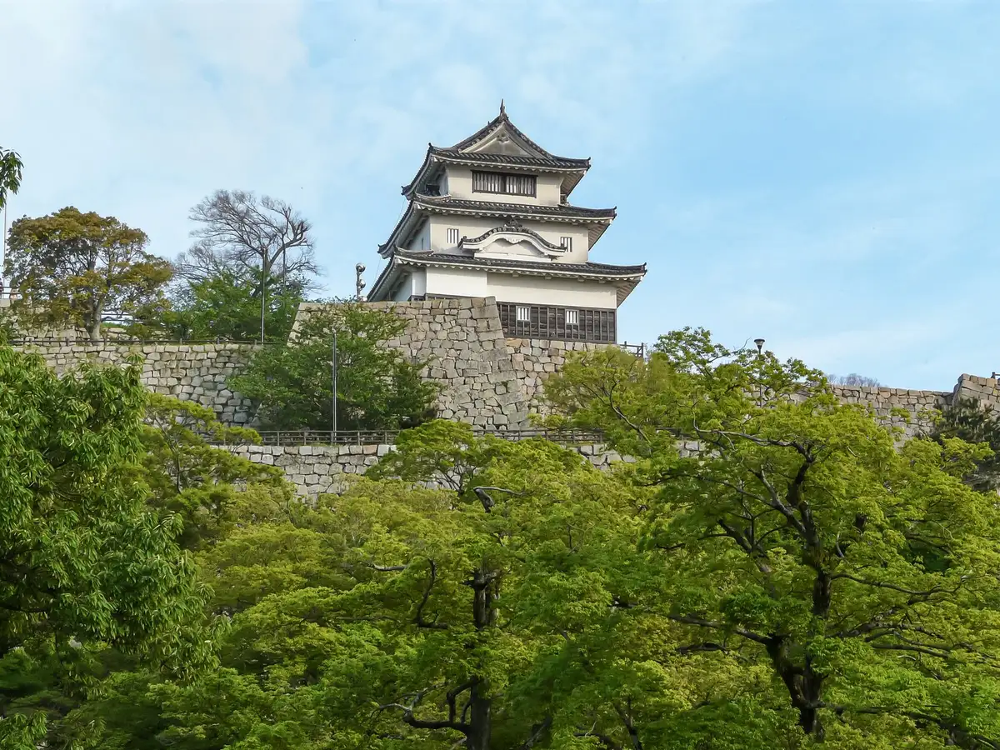
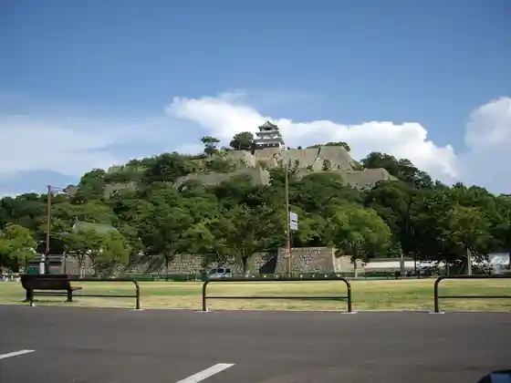
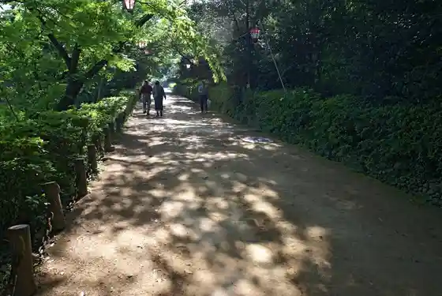
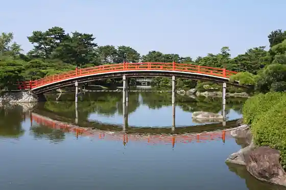
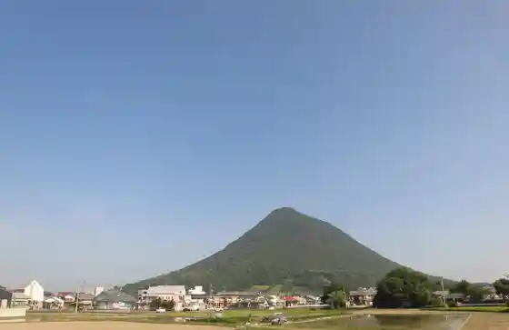

Marugame
Marugame · Kagawa
Marugame
Highlighted on the Kagawa map.

Stay
Apa Hotel (Marugame Ekimae Odori)
Emuzurumosu
Okura Hotel Marugame
Guest House AKAHIGE Marugame (Haku Rutto)
Konfotoin Zentsuji Inta
Supa Hotel Marugame Ekimae Tennen Onsen (Kyogoku Baths)
Bijinesu Hotel Aoyama
Hotel Arufawan Marugame
Hotel Rutoin Marugame
Vira Kamechii | Setochi Kanko no Kyoten Ni ^
Marugame Guest House Ueru Kame
Marugame Guest House Baba no Ba
Marugame Plaza Hotel
Toyoko INN Marugame Ekimae
Kin Kura En / Minpaku
AKIYAto Marugame Montmartre
Cosmo Stay Marugame Ekimae
Rental Room9
marugame stop ^
Dining
Naka Village Udon
Jun Teuchi Udon Yoshiya
Men Tokoro Watatani Marugame Mise
Nakamura
Mugi Kaori
Yama Tomo
Teuchi Chiudon Ho
Teuchi Chi Serufu Udon Umi Samurai Sono no Ichi Iiyama Mise
Udon Okada
Maebaudon
Ayauta Seimen
Kama Age Udon Oka Jima Marugame Mise
Hone Tsuki Tori Ikkaku Marugame Main Shop
Toki Tomaru udon
Onsen
Apa Hotel (Marugame Ekimae Odori) Public Bath
Okura Hotel Marugame Public Bath
Supa Hotel Marugame Ekimae Tennen Onsen (Kyogoku Baths) Public Bath
Hotel Rutoin Marugame Public Bath
AKIYAto Marugame Montmartre Public Bath
Experience
Uchiwa no Minato Museum
Sights
Marugame Shiro
Marugame Shiro Tenshu

Marugame Shiroishi Kaki

Nakatsu Bansho Sono

Iino Yama
